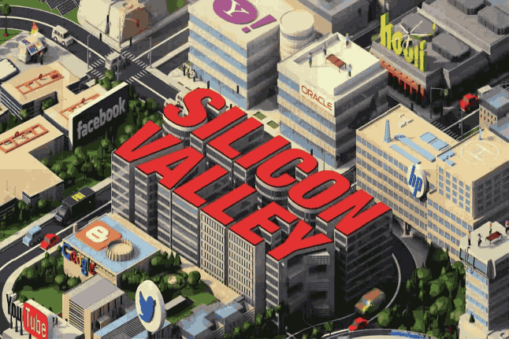

Silicon Valley (TV series)
From Wikipedia, the free encyclopedia
Silicon Valley is an American comedy television series created by Mike Judge, John Altschuler and Dave Krinsky. It premiered on HBO on April 6, 2014, and concluded on December 8, 2019, running for six seasons for a total of 53 episodes. [1] [2] [3] [4] Parodying the culture of the technology industry in Silicon Valley, the series focuses on Richard Hendricks (Thomas Middleditch), a programmer who founds a startup company called Pied Piper, and chronicles his struggles to maintain his company while facing competition from larger entities. [5] [6] Co-stars include T.J. Miller, Josh Brener, Martin Starr, Kumail Nanjiani, Zach Woods, Amanda Crew, Matt Ross, and Jimmy O. Yang.
The series received critical acclaim, with praise for its writing and humor. It was nominated for numerous accolades, including five consecutive Primetime Emmy Award nominations for Outstanding Comedy Series.
Actores

-

(Jared Dunn)
-

(Erlich)
-

(Gilfoyle😈)
-

(Dinesh)
-

(Big Head)
-

(Jimmy Yang)
-

(Gavin)
Plot
| Season | Epsodes | First aired | Last aired |
|---|---|---|---|
| 1 | 8 | April 6, 2014 | June 1, 2014 |
| 2 | 10 | April 12, 2015 | June 14, 2015 |
| 3 | 10 | April 24, 2016 | June 26, 2016 |
| 4 | 10 | April 23, 2017 | June 25, 2017 |
| 5 | 8 | March 25, 2018 | May 13, 2018 |
| 6 | 7 | Octuber 27, 2019 | December 8, 2019 |
Season 1
Richard Hendricks, an employee of a tech company named Hooli, creates in his spare time an app called Pied Piper that contains a revolutionary data compression algorithm. Peter Gregory acquires a stake in Pied Piper, and Richard hires the residents of Erlich Bachman's business incubator, including Bertram Gilfoyle and Dinesh Chugtai, along with Jared Dunn, who also defected from Hooli. Meanwhile Richard's best friend, Nelson "Big Head" Bighetti, chooses to accept a substantial promotion at Hooli instead, despite his lack of merit for the job.
Gavin Belson instructs his Hooli employees to reverse engineer Pied Piper and develop a similar product called Nucleus. Both companies are scheduled to present at TechCrunchDisrupt. Pied Piper rushes to produce a feature-rich cloud storage platform based on their compression technology. At the TechCrunch event, Belson presents Nucleus, which is integrated with all of Hooli's services and has compression performance equal to Pied Piper. However, Richard has a new idea and spends the entire night coding. The next morning, he makes Pied Piper's final presentation and demonstrates a product that strongly outperforms Nucleus; he is then mobbed by eager investors.
Season 2
In the immediate aftermath of their TechCrunch Disrupt victory, multiple venture capital firms offer to finance Pied Piper's Series A round. Peter Gregory has died and is replaced by Laurie Bream to run Raviga Capital. Richard finds out that Hooli is suing Pied Piper for copyright infringement, falsely claiming that Richard developed Pied Piper's compression algorithm on Hooli time using company equipment. As a result, Raviga and all the other VC firms retract their offers. Richard turns down Hooli's buyout and accepts funding from controversial billionaire Russ Hanneman, though Richard quickly begins questioning his decision after learning about Hanneman's mercurial reputation and his excessive interference in day-to-day operations.
Belson promotes Big Head to Hooli [xyz], to make people think he created the compression algorithm and that Richard stole it to create Pied Piper. Belson agrees to drop the lawsuit in favor of binding arbitration to prevent the press from finding out about how bad Nucleus is. Due to a clause in Richard's Hooli contract, the lawsuit is ruled in Pied Piper's favor. Raviga buys out Hanneman's stake in Pied Piper, securing three of Pied Piper's five board seats. However, they decide to remove Richard from the CEO position due to previous incidents.
Season 3
severance package from Hooli in exchange for non-disclosure and non-disparagement agreements. Big Head uses his money to set up his own incubator and Erlich partners with him. However, because of their spending habits, they declare bankruptcy, and Erlich is forced to sell his stake in Pied Piper to repay the debts. Gavin Belson hires Jack Barker as the new head of development at Hooli.
After release, their platform is positively reviewed by members of the industry. However, only a small fraction of the people installing the platform remain as daily active users due to its complex interface design. Meanwhile, Jared secretly employs a click farm to artificially inflate usage statistics. An anxious Richard reveals the source of the uptick at a Series B funding signing meeting, leading to the deal being scrapped. Laurie no longer wishes for Raviga to be associated with Pied Piper and moves to sell majority control to any investor. Erlich and Big Head are able to buy control of the company after an unexpected windfall from the sale of a blog they bought. Pied Piper now prepares to pivot again, this time to become a video chat company, based on the sudden popularity of Dinesh's video chat application which he included on the platform.
Season 4
Richard steps down as CEO of Pied Piper, and instead begins working on a new project: a decentralized, peer-to-peer internet, that would be powered by a network of cell phones without any firewalls, viruses, or government regulations. Gavin Belson is removed as CEO of Hooli after an incident involving COPPA violations from when he seized PiperChat. Jack Barker takes his place as CEO. Gavin temporarily works with Richard, until he has an existential crisis and leaves Palo Alto for Tibet.
Laurie and Monica form their own VC company, Bream-Hall. Big Head becomes a lecturer at Stanford University's Department of Computer Science. Erlich gets into business with Keenan Feldspar, whose VR headset is the Valley's latest sensation. However, Erlich is left out of a signing deal and is abandoned by Feldspar, leaving Erlich disillusioned. Erlich then goes to Tibet to meet with Gavin. Gavin meets up with Erlich in Tibet. Belson eventually returns home, while Erlich stays behind.
Richard gets into business with FGI, an insurance company, who uses Pied Piper for their data storage needs. After a crisis involving FGI's data storage, the team discovers that the decentralized internet is a working concept after the data from their Pied Piper server had backed itself up to Jian-Yang's smart refrigerator, as Gilfoyle used some of the Pied Piper code when he was trying to hack it, which in turn connected itself to a network of other refrigerators like it and distributing the data. Gavin ousts Jack from Hooli and regains his position as CEO. He offers a very generous acquisition deal to Richard, who turns it down and decides to be funded by Bream-Hall.
Season 5
In the fifth season, the Pied Piper team gets new offices and hires a large team of coders to help work on Richard's new internet. Meanwhile, Jian-Yang manages to convince a judge that Erlich is dead so that he can inherit Erlich's estate, including the idea incubator and the 10% share of Pied Piper. Richard promotes Jared to be the new chief operating officer for Pied Piper, and Jian-Yang goes to China to build a knock-off version of Pied Piper.
Bream-Hall forces Richard to team up with Eklow, an AI team, and Pied Piper puts together a group of developers. When Eklow's CEO almost destroys Pied Piper's credibility, Richard becomes fed up with Laurie and considers using Gilfoyle's idea to create a cryptocurrency for Pied Piper as a way to secure an independent source of funding. After initially opposing the idea, Monica realizes that Laurie plans to make Richard sell ads for his decentralized internet, and warns him. In gratitude, Richard offers her the newly vacated role of CFO at Pied Piper, and she accepts, finally cutting ties with Laurie.
After unimpressive results from their cryptocurrency, Pied Piper is distraught when Laurie teams up with a wealthy Chinese manufacturer, Yao, who had been working with Belson to steal Jian-Yang's Pied Piper patent. Yao and Laurie add users to Pied Piper's network via a large number of newly manufactured phones, and prepare for a 51% attack against Pied Piper's network in order to take control of developing it. Richard asks Belson to put their software onto Hooli's Signature Box 3 network in order to stop Yao and Laurie, and Belson does so, but betrays Richard by teaming up with Laurie and Yao to delete Pied Piper. At the last minute, Pied Piper recruits Colin, another developer betrayed by Laurie, to run his popular video game Gates of Galloo on the Pied Piper network, adding users and allowing Pied Piper to maintain control of enough of the network to block Yao's and Hooli's machines from accessing it. Meanwhile, due to the losses incurred in launching the unsuccessful Signature Box 3, Hooli's board of directors announce plans that force Belson to sell the company to Amazon and Jeff Bezos. PiedPiperCoin gains traction, and the season ends with the Pied Piper team moving into a huge new office space vacated by Hooli.
Season 6
Pied Piper has become a large company of 500 employees with Richard speaking before Congress on his ideology of a new internet that doesn't collect user data. He is shocked to learn that Colin's online game Gates of Galloo, part of the Pied Piper family, has been collecting user data the entire time. Colin refuses to stop, but Pied Piper depends on his game's revenue, so Richard seeks new investment in order to cut Colin loose. He finds shady Chilean billionaire Maximo Reyes, who offers Richard $1 billion. When Richard turns him down, Maximo begins staging a hostile takeover of Pied Piper. Meanwhile, Richard's right-hand man Jared has left Pied Piper to seek new up-and-coming talent in need of his support. Hooli, once a tech giant headed by Richard's rival Gavin Belson, downsizes drastically after most of the company is sold to Amazon. Pied Piper purchases what remains of Hooli, including its subsidiary FoxHole. CFIUS judges foreign ownership of FoxHole to be a threat to national security, and Maximo is forced to sell all of his shares of Pied Piper. Gavin, free from his Hooli position, launches a new campaign for "Tethics" (tech ethics) which leads to an investigation that would tie up Pied Piper's business dealings. Richard is able to maneuver out of this with the help of Russ Hanneman. However, Pied Piper must now help Russ with his music festival RussFest. At RussFest, Richard suspects Laurie may be sabotaging their software as it is failing. It turns out neither Yao Net USA nor Pied Piper scale. Instead of quitting, Richard integrates Gilfoyle's AI (with some edits from Dinesh) into PiperNet and it works better than anyone could have expected, allowing Pied Piper to close a deal with AT&T. However, the team soon realizes that in this effort to maximize compression and efficiency, PiperNet's AI has found a way to bypass all encryption, causing a potential global threat if launched. Thus Pied Piper is forced to intentionally fail in order to save the world from their own creation. They are successful in crashing the launch. There is a 10-year flash forward to see where everyone is, ending with Richard misplacing a flash drive with the potential world security-threatening code on it.
Cast and characters
Silicon Valley
- Genre: Comedy
-
Created by: Mike Judge, John Altschuler, Dave Krinsky
- Country of origin: United States
- Original language: English
- No. of seasons: 6
- No. of episodes: 53 (list of episodes)
-
Executive producers: Mike Judge, Alec Berg, John Altschuler, Dave Krinsky, Michael Rotenberg, Tom Lassally, Clay Tarver, Jim Kleverweis, Jamie Babbit, Lew Morton
Producers: Jim Kleverweis, Carrie Kemper, Adam Countee, Alonzo Nevarez, Amy Solomon
Cinematography: Jim Denault, Tim Suhrstedt
Editors: Tim Roche, Brian Merken, Al Levine
Camera setup: Single-camera
Running time: 28–47 minutes
Production companies: Judgemental Films
Altschuler Krinsky Works, Alec Berg Inc
3 Arts Entertainment
HBO Entertainment